Cloud spend to date
An accurate, real-time view of accumulated cloud spend, so teams could monitor cost continuously instead of waiting for the monthly bill.
Designing multi-persona cost visibility that helped New Relic turn cloud spend into an observable, controllable metric.

I designed the first version of New Relic's cloud cost management platform, the product the company now ships publicly as Cloud Cost Intelligence (CCI).
The brief looked simple: give engineering and finance teams a way to see and control cloud spend. The reality was a new domain with almost no design precedent. FinOps had only emerged around the COVID-19 pandemic, there was little public reference for how it worked inside companies beyond the FinOps Foundation, and access to the end users was restricted.
I walk through how I structured the problem and the decisions behind the platform's core screen, using the cost overview dashboard as the reference flow.
Impact
Team Composition
FinOps was new. It had emerged with the pandemic, and there was little documented practice for how companies actually applied it. I used the six core FinOps principles as a starting framework to structure what the platform had to support.
I could not lean on convention, so I treated the discovery itself as the way to build the missing map.

The platform had to serve development managers, but the client also needed it to work for developers and financial analysts. Developers wanted highly detailed data. Analysts wanted generic breakdowns for billing reconciliation. Designing one surface for both was the central tension of the project.
Credential restrictions limited my contact with development managers. With direct access to the end users constrained, I leaned on a structured survey and constant work with the researcher to capture needs I could not observe firsthand.
The client assigned no Product Owner. With no single figure setting priorities, I drove prioritization and direction in the open, aligning decisions with the team against a shared read of the goals. I designed every screen of the platform during my time on the project.
The primary goal was to give each engineering manager a single place to see and act on cloud cost: baselines, allocation, tagging, budgeting, forecasting, monitoring, alerts, and actionable insights.
Below, what success looked like for the client.
An accurate, real-time view of accumulated cloud spend, so teams could monitor cost continuously instead of waiting for the monthly bill.
Annual, monthly, weekly, and daily comparisons, so users could spot the patterns and changes behind their spend.
A granular breakdown by product or service, showing exactly where resources were being consumed.
Spend tied to actual resource usage, so each team, product, or service was accountable for what it consumed.
With direct user access restricted, I built and ran a structured survey with the project's researcher, targeting five departments:
41 people were invited; 10 responded over three weeks in June 2024. Small sample, internal only, no external clients involved.
The findings were directional, not conclusive, and I used them that way.
How teams judged efficiency, and what they focused on.
How rival solutions compared, and where we could differentiate.
Users know these tools and have views on improving them.
Users weigh protection of financial and operational data heavily.
Seen as the main rival, with solutions users find attractive.
Adoption depends on visible savings and measurable ROI.
Real-time insights, detailed reporting, automated optimization recommendations.
Connecting to AWS, Azure, GCP, and DevOps tools is a critical factor.
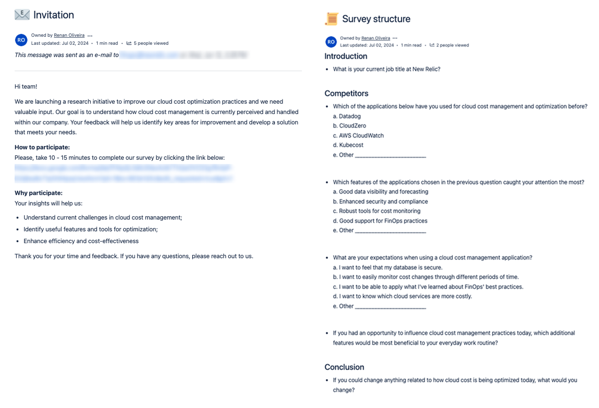
Principal Software Engineers were 40% of responses; the rest were Directors, Managers, and LSEs.
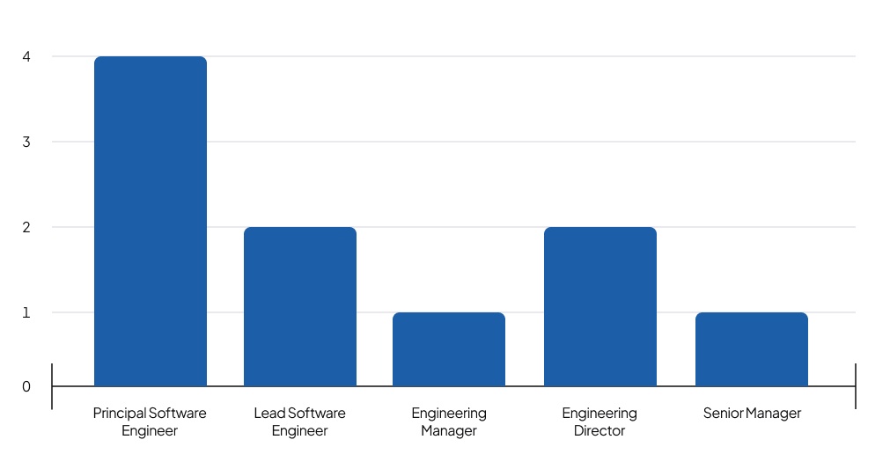
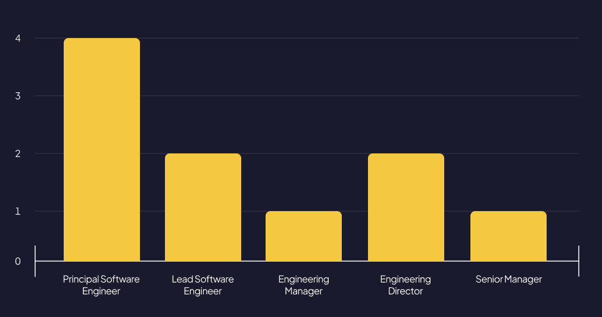
None had used Datadog for cost management. 90% had used CloudZero, and 70% had used AWS CloudWatch.
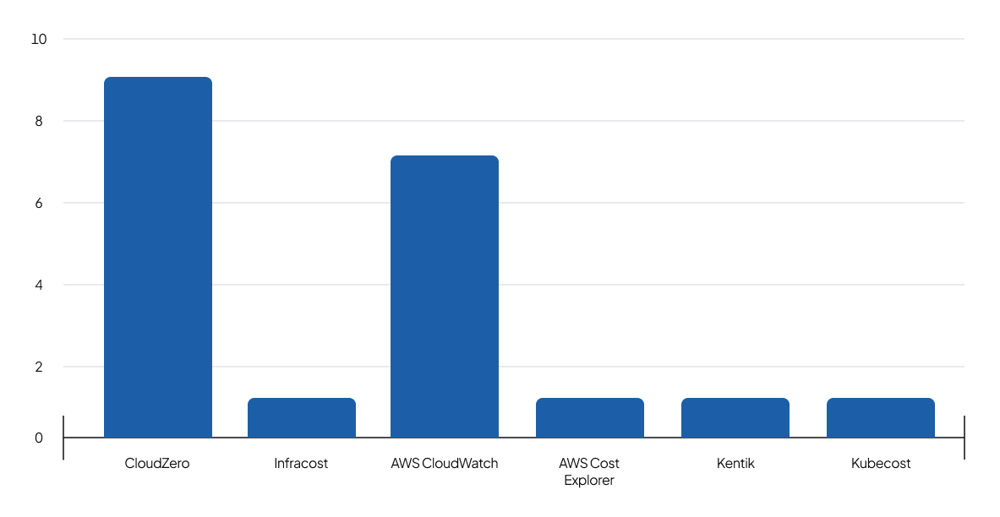
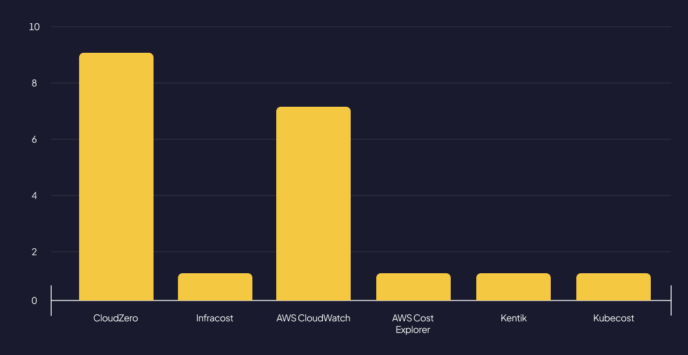
Data visibility, forecasting, and robust monitoring drew the most attention, and 40% cited good support for FinOps practices.
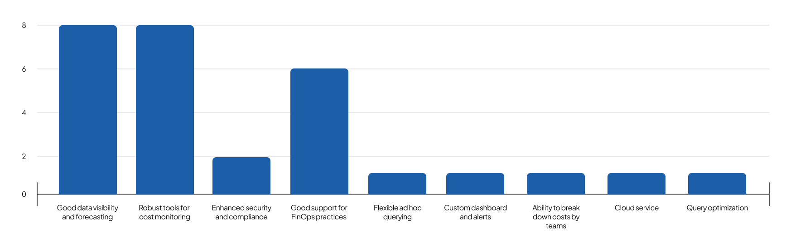
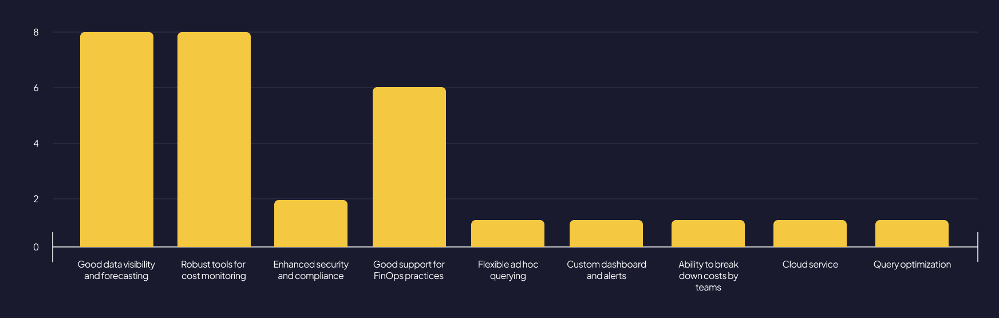
The top three expectations: easily monitor cost changes over time (80%), identify the most costly services (60%), and apply FinOps practices (50%). Users also wanted spend visible by product and team, at a granular level.
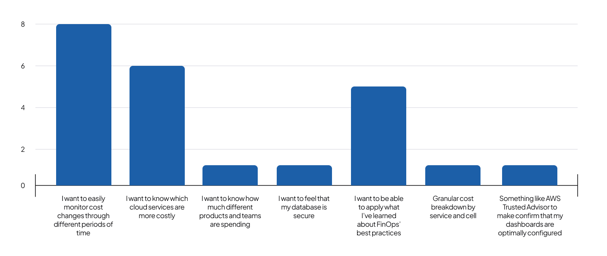
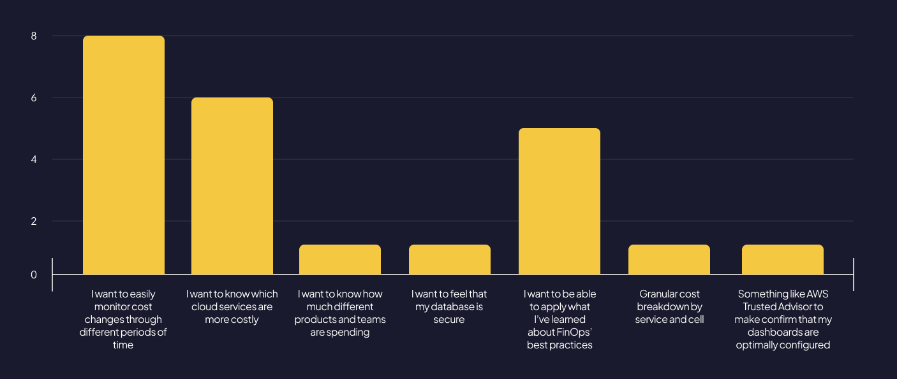
Clustering the open responses surfaced six consistent needs:
Two demands ran through all of them: proactive control over cost, and the ability to read that cost at very different levels of detail depending on who was looking.
The sample was small and internal only, so I treated these as directional signals, not hard requirements. They set the direction; the design decisions had to validate the read.
The survey overturned the starting assumption. Datadog was the perceived benchmark going in, but none of the respondents had ever used it for cost management.
The tools they actually knew were CloudZero (90%) and AWS CloudWatch (70%). That finding redirected the benchmark: the conventions worth studying were the ones users already had opinions about, not the one they had only heard of.
Working with stakeholders who knew these tools well, that reference is what let us lock the direction for the core experience.
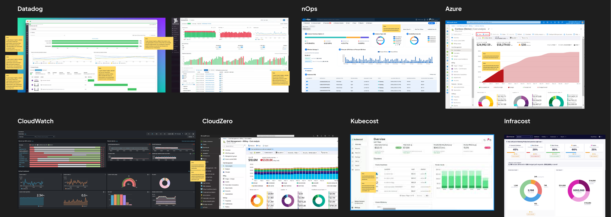
The stakeholders briefing me were not a business team. They were engineers who wanted raw tables. But the people who would live in this product every day also included FinOps managers with no technical background.
The real problem was not building a dashboard. It was making highly technical cost data legible across the gap between engineering and finance.
That reframe drove every decision in the build.
The survey clustered into six consistent needs:
Those six clusters mapped directly to the platform's core capabilities. Here are the decisions that followed from them.
The technical stakeholders' first instinct was tables. I pushed back. For data this dense, across this many services, tables would bury the signal. I designed the surface as a dashboard built around charts and indicators, so a user could read the state of their spend at a glance before drilling in. This was a deliberate bet against the initial ask, and the survey backed it: users ranked clear visualization and monitoring above everything else.
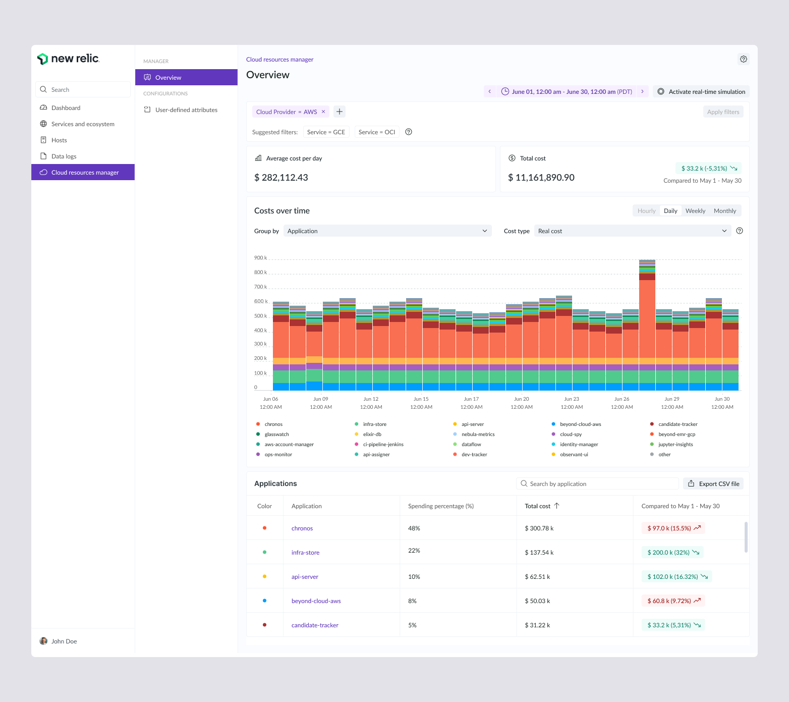
After dozens of conversations with the stakeholders, and with the survey results in hand, one thing was clear: the consumption chart was the heart of the product. Everything else supported it. I designed it to be immediately readable and complete enough to carry the full cost story on its own, with spend stacked by application across the selected period.
I anchored the screen with Total cost and Average cost per day for the selected period. A manager could open the platform and immediately know how much their context was spending, then use the chart to see which product or team was driving it. A headline number paired with the breakdown beneath it is what turns the screen from a report into a decision tool.
This is where the engineering-to-finance gap got solved. Rather than design three screens, I gave one screen a set of controls: Group by, Show in legend, Cost type, and a time granularity toggle for hourly, daily, weekly, and monthly views. A developer could drill into raw, detailed cost. A FinOps manager with no technical knowledge could roll the same data up into something legible. One surface, calibrated by the user to their own level of detail.
Users needed to narrow the view to the slice that mattered to them, so I designed a filtering layer at the top of the screen that extends the same logic of customization. Because New Relic ran on AWS, the stakeholders asked for Cloud Provider equals AWS to load by default.
Teams needed to define their own cost dimensions, the logic that groups raw resources into meaningful categories. Aligned with the stakeholders, we landed on a YAML upload so teams could version and manage that logic as a file, with a full history of changes and the ability to restore a previous version. I designed the upload flow and the version history around that decision.
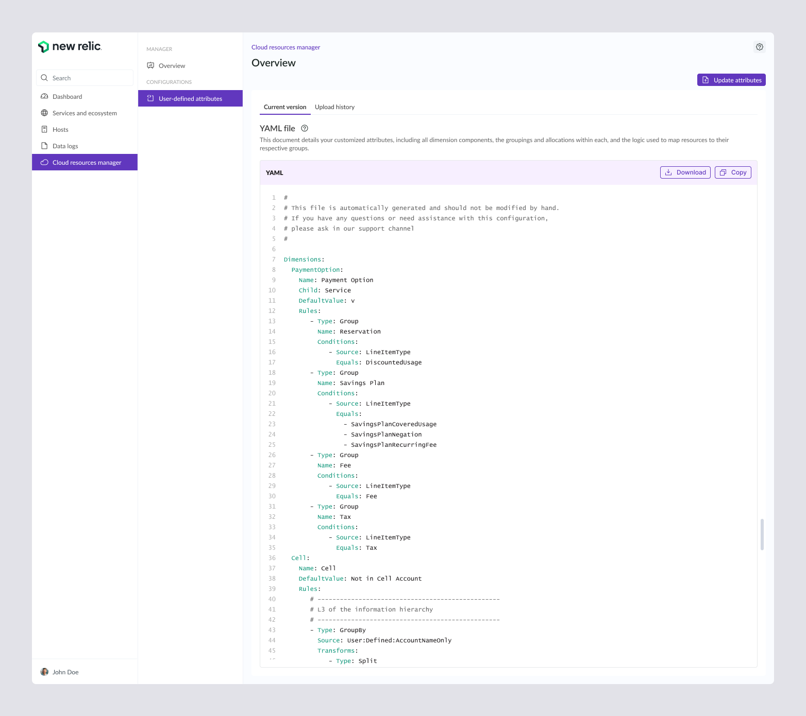
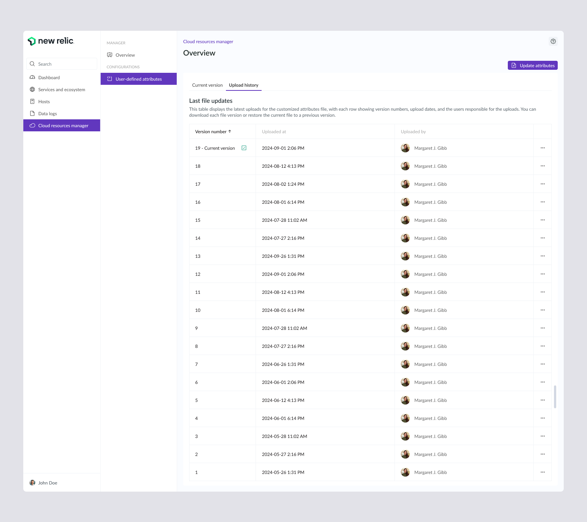
The survey was explicit: users wanted to be warned before a cost ran away, not after. I built that into each product's detail view. A user sets a cost threshold over a chosen date window, adds recipients, and the platform sends an email alert when spend crosses the line. This is the proactive control the research asked for, made concrete.
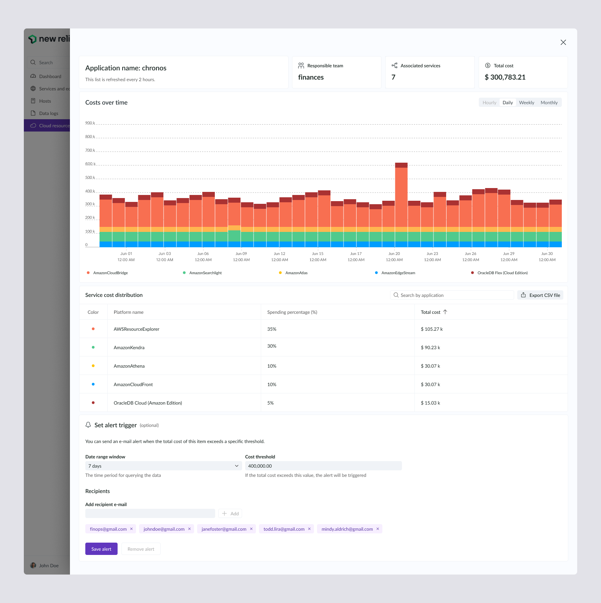
The platform shipped and kept evolving after I rolled off the project.
The work I designed became the foundation New Relic now ships publicly as Cloud Cost Intelligence.
In December 2025, New Relic published how its FinOps practice drove a 60% reduction in internal cloud production cost per GB
*That 60% cost reduction is New Relic's engineering result, not a design metric. What the design contributed is the surface where that practice becomes legible: the place where engineers and FinOps managers see spend, spot anomalies, and act on it.
Designing the first version of that surface, in a domain with no map and no assigned Product Owner, is what this project stands on.
The design direction I established in V1 is the same one New Relic ships today: dashboard over tables, cost-over-time as the core chart, customization controls to bridge engineering and finance.
Discovery surfaced more than one release could hold. I handed off a focused roadmap of the highest-value extensions.
Ingest entities like Kubernetes and load balancers so the cost picture covers the full stack.
Add raw, amortized, blended, and discounted cost views to reflect how spend is really charged.
Give teams budgets to manage and optimize spend against, not just observe it.
Surface cost efficiency ratio, savings from optimization initiatives, and budget variance by team.
Automated ticket creation when a cost anomaly or investigation is triggered.